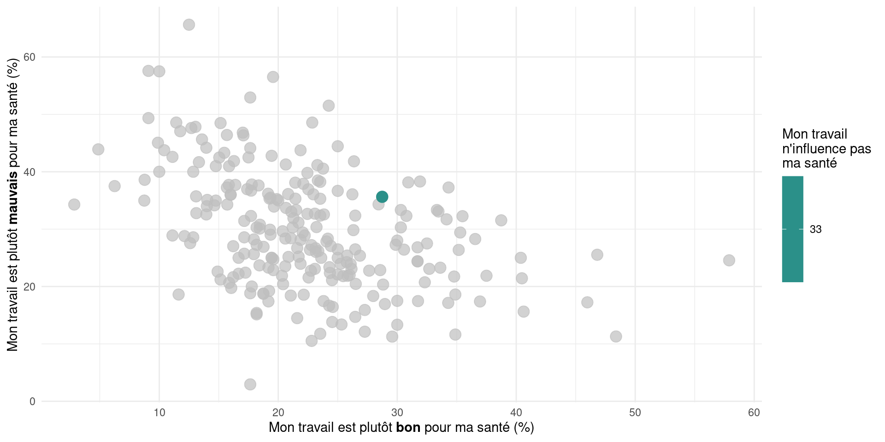

Ambivalence de l’attachement au travail
Intervention pour Agribio
4 février 2025
Questions
- Pensez-vous pouvoir faire le même travail jusqu’à la retraite ?
- Le souhaitez-vous ?
- Seriez-vous ou auriez-vous été heureux qu’un de vos enfants fasse le même métier que vous ?
- Est-ce qu’il vous arrive de penser à votre travail même quand vous n’y êtes pas ?
- Pensez-vous que votre travail influence votre santé ?
- Dans votre travail, à quelle fréquence vous arrive-t-il de ressentir les sentiments suivants :
- De l’ennui ?
- Le sentiment d’être exploité ?
Travail/Santé (éleveurs)
